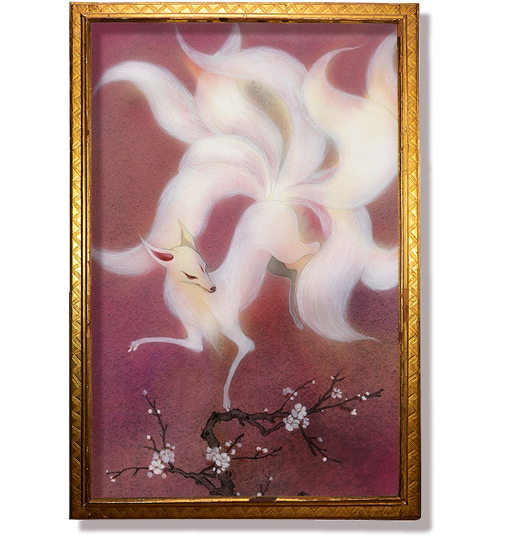
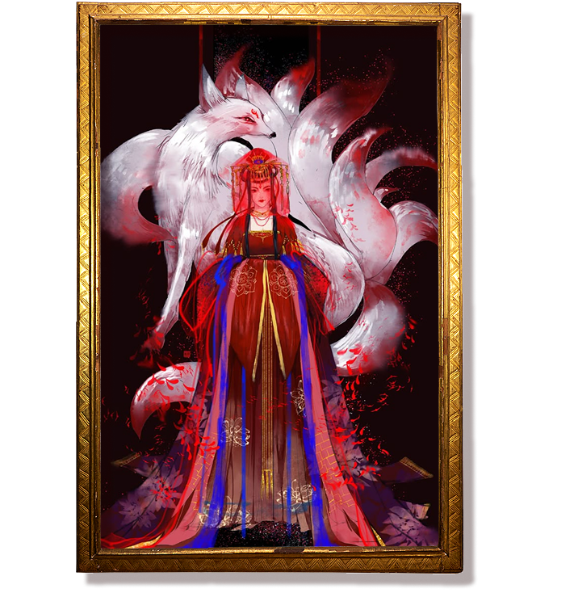
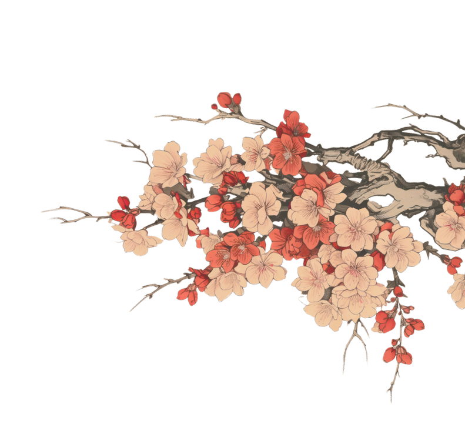

О КИЦУНЭ
Люди и твари принадлежат к разным породам, а лисы находятся где-то посередине
У живых и мертвых пути различны, лисьи пути лежат где-то между ними


Кицунэ — мифическое
существо-ёкай в японской мифологии
и фольклоре. Лисица, обладающая сверхъестественными способностями
В японском фольклоре кицунэ часто принимают облик молодых женщин и юношей
а также представляются хитрыми обманщицами
(иногда и верными компаньонами)





Японцы считают, что и в наши дни
встретить кицунэ можно повсюду